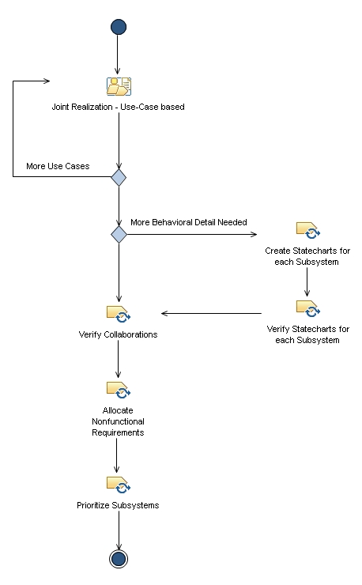

Capability Pattern: Architectural Design - Use-Case based
Description
Work Breakdown Structure
Team Allocation
Work Product Usage
Workflow

Work Breakdown
Licensed Materials - Property of IBM
© Copyright IBM Corp. 1987, 2011. All Rights Reserved.